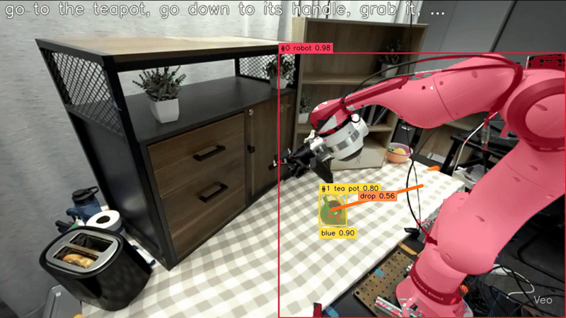
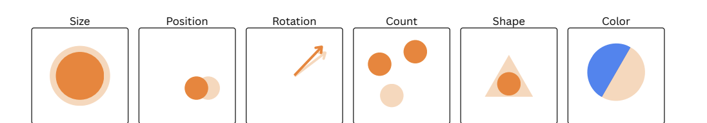

Publications
Authors marked with an asterisk contributed equally. See also my Google Scholar profile.

Under review at Conference on Robot Learning (CoRL) Under ReviewSenior Thesis
A semantically similar demonstration, once geometrically adapted to the current scene, gives a vision language action model a high quality behavioral prior. RA-VLA retrieves the best matching demonstration, warps its trajectory to keypoint correspondences in the new scene using a multimodal large language model, then overlays that trajectory onto the robot's observations as a scene grounded reference. Fine-tuning the model to act on these overlays improves task success over state-of-the-art models on the RoboLab-120 simulator and on real-world tasks, all without collecting new demonstrations.

Under review at NeurIPS Under Review
A controlled framework trains diffusion models on synthetic data that isolates basic visual skills such as size, position, and rotation. Models interpolate well inside the training distribution yet fail to extrapolate beyond it, which reveals a clear boundary in how current generative models generalize.

Under review at COLM · published at the NeurIPS 2025 ER Workshop Under Review
Delta Activations represent a finetuned model by the shift in its internal activations relative to a base model. The vectors cluster cleanly by domain across model hubs and support task based retrieval from only a handful of examples. I led the experiments and released more than 700 finetuned open-source models on Hugging Face.

NeurIPS 2025 Spotlight · Top 3%
Up to 69 percent of embodied AI failures come from perception errors. ESCA uses VINE, a foundation model that turns video into spatio-temporal scene graphs, to give vision language models explicit spatial context. It raises success rates by up to 10 percent, improves spatial reasoning by 14.6 percent, and cuts perception errors from 69 percent to 30 percent on EmbodiedBench without retraining the underlying models.

Dolphin combines symbolic reasoning with neural computation through a CPU and GPU hybrid execution strategy. By vectorizing probabilistic computations on the GPU it achieves up to 62 times faster convergence than baselines across 13 benchmarks that span text, image, and video.

CLAM unifies parameter efficient finetuning, quantization, and pruning by reformulating each as a weight based adaptation, which lets otherwise incompatible methods chain freely. As lead developer I showed that CLAM compositions match uncompressed models while using 86 percent fewer bits.

Foundation model behind ESCA
VINE turns video into probabilistic scene graphs that capture entities, attributes, spatial relationships, and temporal dynamics. Trained on more than 87,000 videos with neurosymbolic learning, it is both promptable and finetunable, and it powers everything from contextualizing vision language models to learning robot policies from broad demonstration corpora.

bioRxiv, 2021 · ISEF Finalist
Using clustering and dimensionality reduction in scikit-learn, this work identified genes expressed differently between people with Alzheimer's and a control group, then built a model that predicts likelihood of Alzheimer's from peripheral blood gene expression with 98 percent accuracy. The paper has been cited more than 8 times.